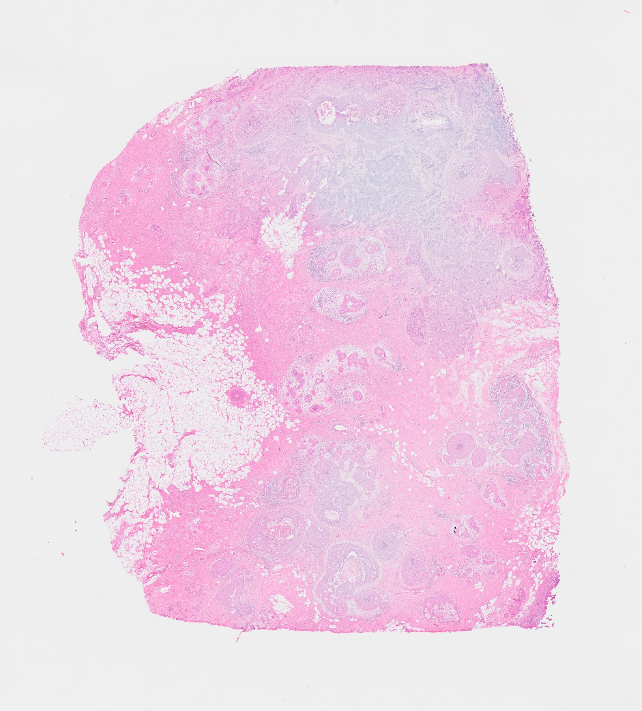
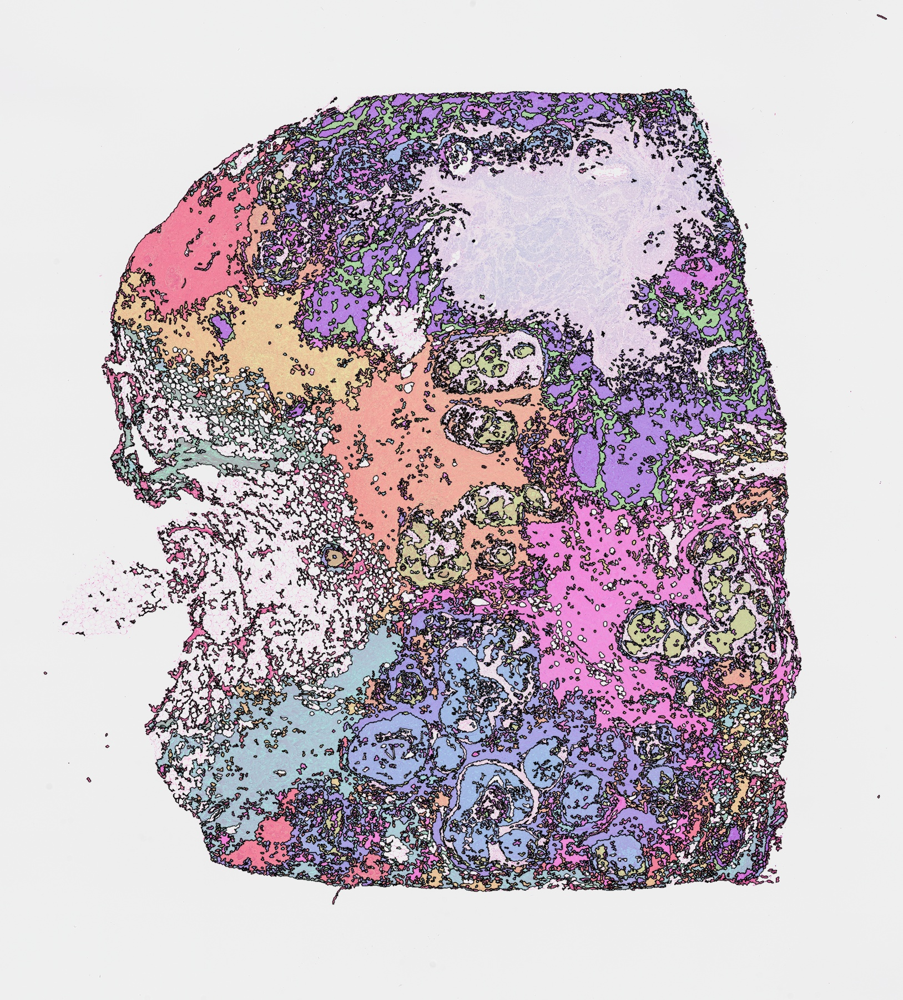

Breast cancer · Giotto
10.68 × 11.81 mmSample details and downloads
The measured spot clusters were frozen before image refinement. Bora used one whole-section fit and all 13 response maps. Output outside the measured spot footprint is image-only extrapolation.
The GeoJSON uses the original full-resolution H&E image pixel coordinates and retains the anonymous expression-group identifiers shown here.

Coverage limitation: the tissue-support rule excludes part of the pale breast tissue, most clearly in Wide 02 and Large 03. Those uncolored regions are an output failure, not evidence of background or absence of tissue.